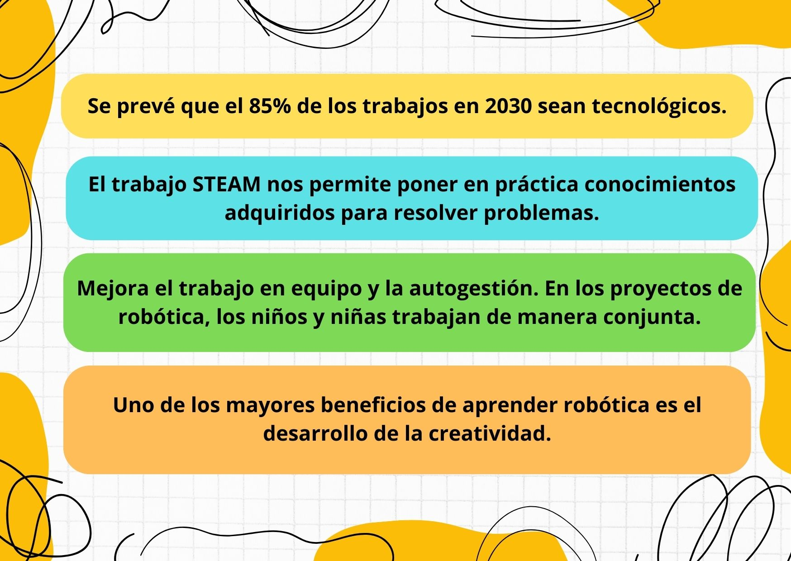
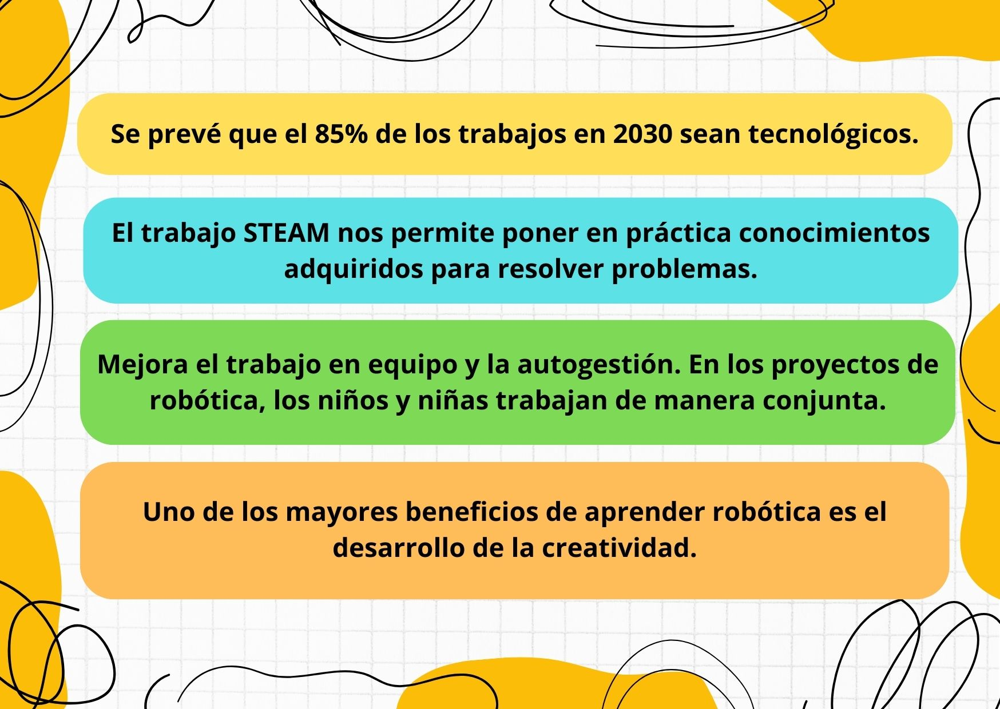
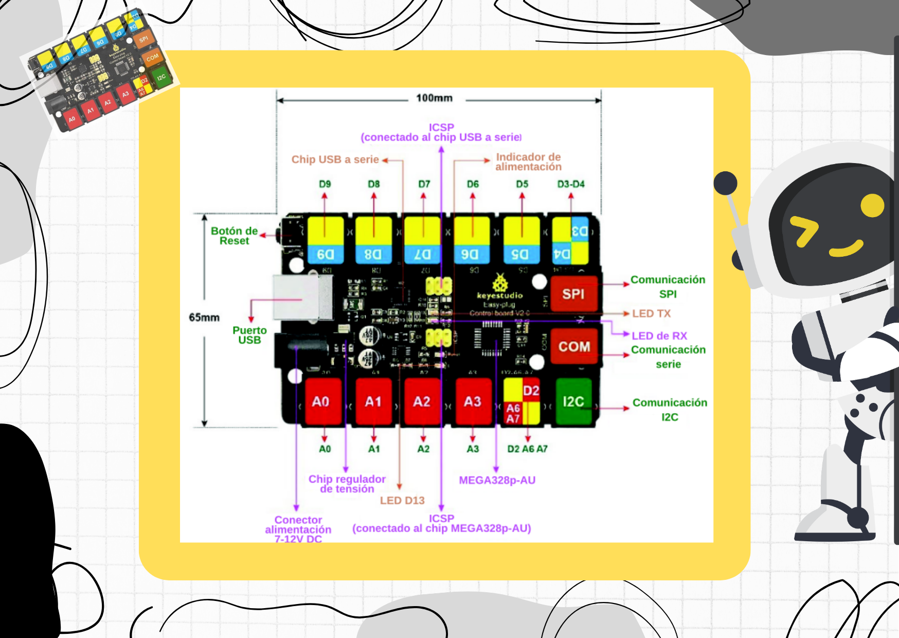
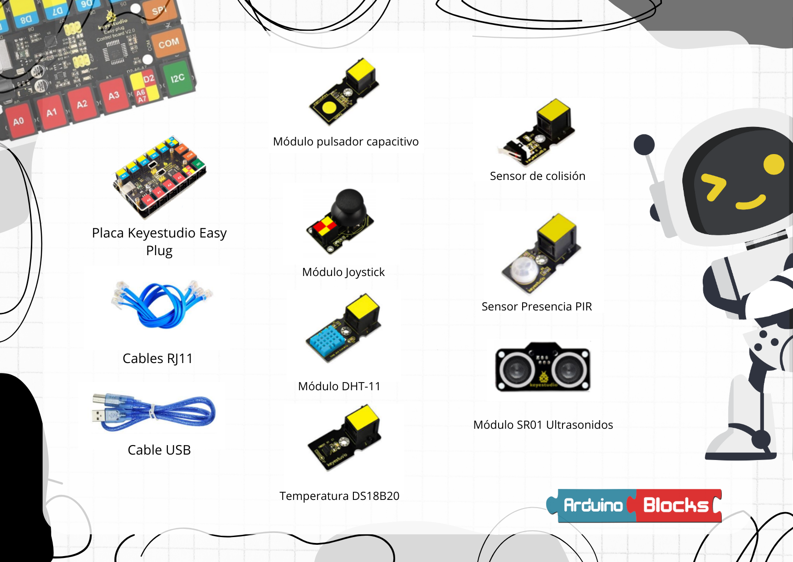
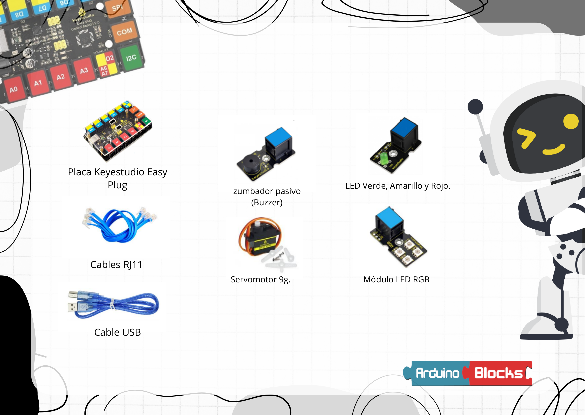

¿Por qué trabajar la metodología STEAM?


El kit EASYPlug de Keyestudio se basa en la placa Arduino de código abierto, con más facilidad para usar. La placa de control del kit viene con conectores RJ11 para conectar los sensores y actuadores, esto hace que las conexiones sean sencillas y no se necesite trabajar con protoboards. Este material es ideal para comenzar en la robótica en Educación Primaria y realizar proyectos más complejos en Educación Secundaria de una manera cómoda y rápida en las conexiones.
El kit es totalmente compatible con Arduino UNO, con esta placa se puede “sentir” el entorno mediante la recepción de entradas desde una variedad de sensores y puede “actuar” a su alrededor mediante el control de luces, motores y otros artefactos.
Cuenta con la siguientes características técnicas:
Cinco puertos digitales (de entrada y salida) identificados con color azul.
Cuatro puertos de entrada analógica identificados con etiquetas de color rojo.
Un puerto SPI
Un puerto I2C.
Sus conectores son pines RJ-11 de cuatro hilos, lo que les hace mucho más fáciles para conectarlos y evitar malas conexiones.
Voltaje de funcionamiento: + 5V
Voltaje de entrada externo: + 7V ~ + 12V. (Límite: +6 V. <+ 20 V).
Corriente de interfaz DCI / O: 20 mA

A continuación se muestran algunos de los sensores del starter kit. Un sensor monitorea las condiciones ambientales, como los niveles de fluidos, las temperaturas, las vibraciones o el voltaje. Cuando estas condiciones cambian, envían una señal eléctrica al sensor, que luego puede enviar los datos o una alerta a nuestra placa.
Existen otros componentes de ampliación para este kit que pueden conectarse a través de conexiones RJ11.

Los actuadores permiten convertir señales eléctricas en acciones o variaciones de magnitudes físicas.

Obra publicada con Licencia Creative Commons Reconocimiento Compartir igual 4.0